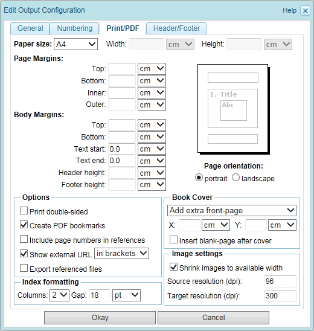
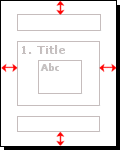
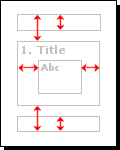

2.6.2.1.4. PDF output settings
The "PDF" tab of the output configuration dialog allows to edit the PDF output settings (see following screenshot). This tab is only available if the format "PDF" is selected in the "General" tab.

Figure 2.6.12. PDF output settings
Each of these settings is described below:
Paper Size
Select a paper size from the list. If you select the value "custom" from the list, then you can enter a custom page width and height in the input fields.
Page orientation
Select whether the page orientation shall be "portrait" or "landscape".
Page Margins
Enter the top, bottom, inner and outer page margins (see following illustration).

Figure 2.6.13. Page margins
If no values are supplied, then default values will be used.
Body Margins
Enter the body margins as depicted in the following illustration.

Figure 2.6.14. Body margins
If no values are supplied, then default values will be used.
Print double-sided
Check this configuration setting to create double-sided output. For example, this will adjust the left and right page margins and the position of the page numbers depending on whether the current side is a left-hand or right-hand side.
Create PDF bookmarks
If this configuration setting is checked, then PDF bookmarks will be created. PDF bookmarks allow easy navigation through the PDF document by supplying a clickable and collapsible table of contents.
Include page numbers in references
If this configuration setting is checked, then cross references (links) within the PDF document will include page numbers. See here for information on how to create links.
Show external URL
Check this configuration setting if the URL of an external link shall be inserted as visible text. Select from the list whether the URL shall be enclosed in brackets and appended to the link text or be inserted as a footnode.
Export referenced files
If a publication contains file-links (see Section 2.3.8.8, “Links”), then this setting controls whether the referenced files will be added to the export or not. If this setting is checked and at least one file-link exists within the publication, then the exported file is a zip-archive containing the publication as PDF-file and a sub-folder named "files" that includes all referenced files.
Index formatting
If the generation of a book index is enabled (see Section 2.6.2.1.1, “General output settings”), then these settings define the number of columns per index page and the space (gap) between the index columns.
Book Cover
If a cover-image has been defined for the publication (see Section 2.6.1, “Publication configuration”), then these settings control the formatting of the cover-image for PDF output. Select whether an extra cover page shall be added in front of the title-page or whether the cover-image shall be placed as background-image on the title-page. If an extra cover-page is generated, then optionally a blank page can be inserted after the cover page (e.g. for double-sided output). Furthermore the horizontol (X) and vertical (Y) position of the cover-image can be set. If no X/Y position is entered, then the cover-image is centered by default.
Shrink images to available width
If an image is larger than the page width, then this setting controls whether the image is automatically scaled to fit the available space or the original size is preserved. If the original size is preserved, then images may be cut off if they do not fit on the page. Note that if this setting is enabled, then the automatic shrinking is only applied to images in the content, but not to the image on the cover-page or in the header/footer.
Source resolution
The default source resolution used for images.
Target resolution
The output resolution used for the rendering of images.